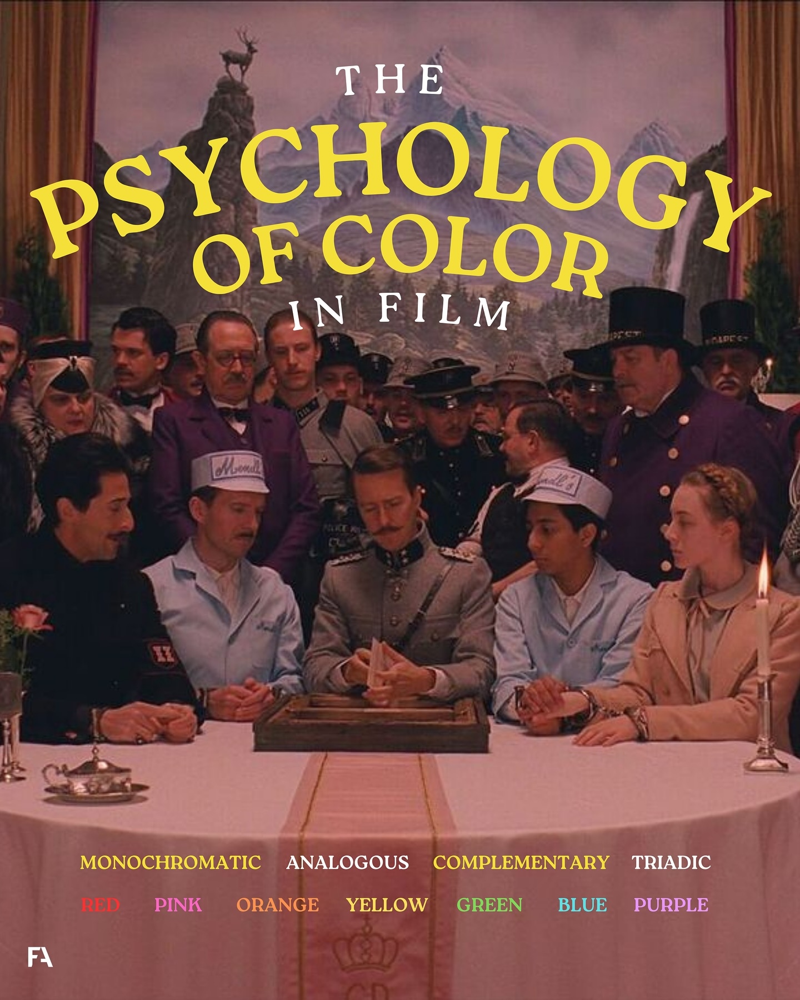
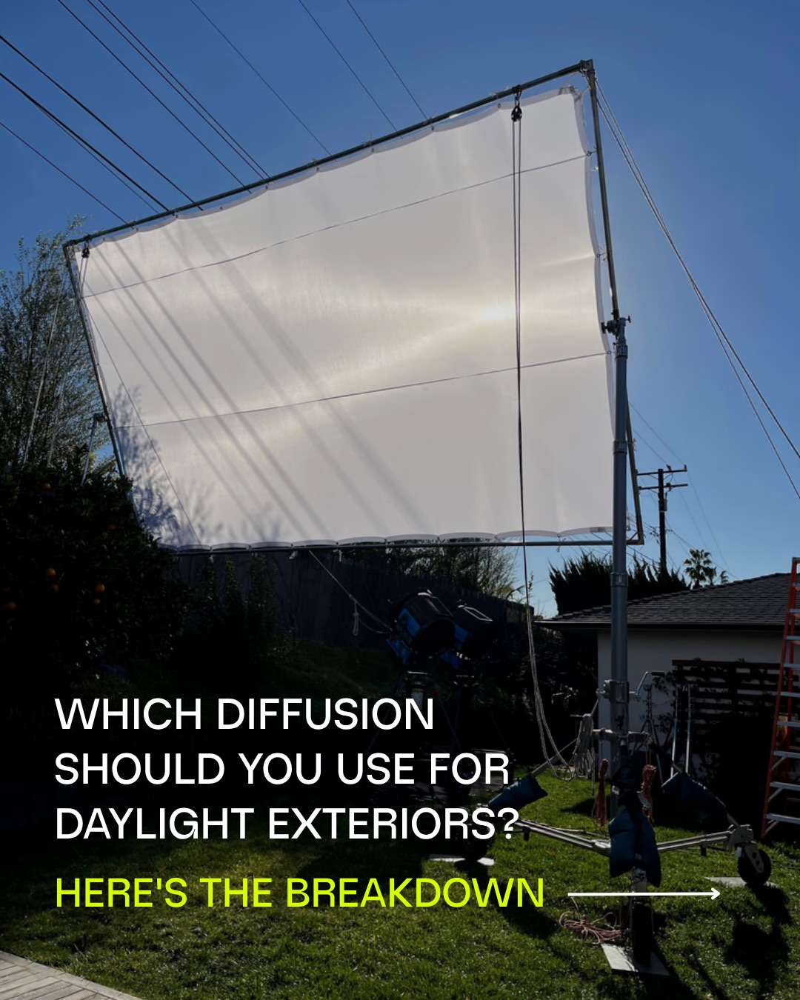
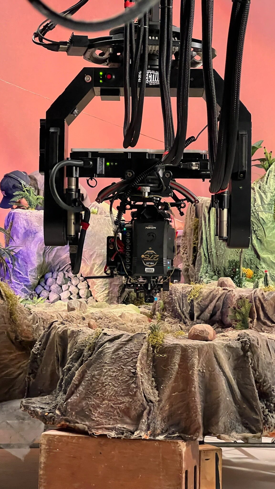
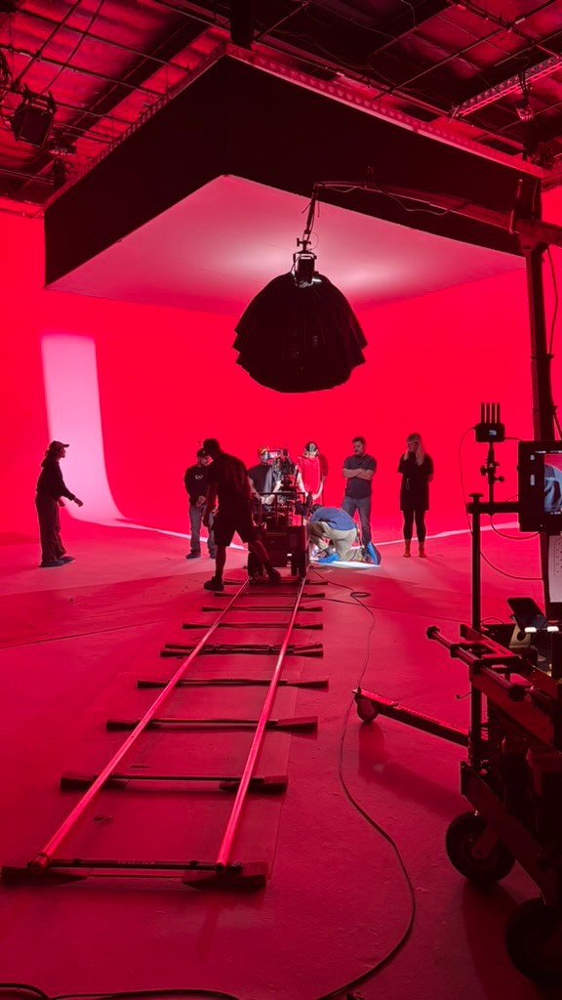
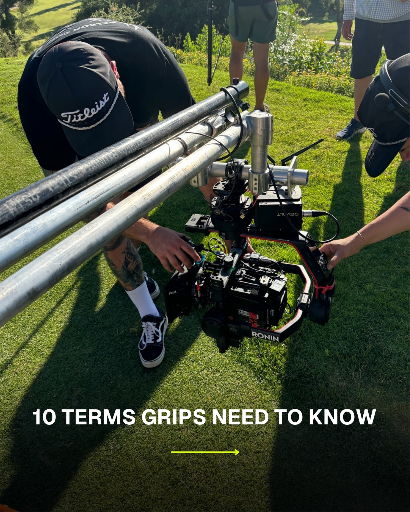
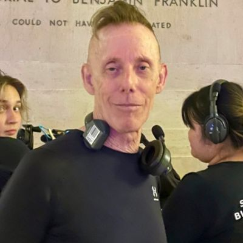
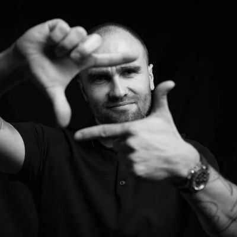
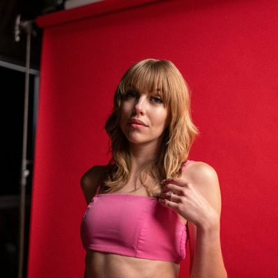

A boutique agency built by creatives, for the people who make the work and rarely get seen for it.





Follow our work @wearelostobjects
“Lost Objects grew my Instagram from 400 to over 50,000 followers in less than a year, completely organically. Their personalized strategy and attention to detail have been the foundation for building my brand online.”
“Kyra and Brendan helped me launch a cohesive brand across Instagram and my website, with a clear roadmap tailored to the film industry. Their creative input and strategic approach have been invaluable.”

“Lost Objects gave me clear, actionable advice that elevated my Instagram and made my profile stand out. Their feedback was thoughtful, easy to implement, and made an immediate difference in how I present my work online.”

Every engagement starts where you are right now. Pick one and answer a few quick questions.
Prices shown are starting points. Final pricing depends on the scope and scale of your request, and we’ll confirm exact pricing when we follow up. All sessions are booking requests, not instant confirmations.
Looking for a room full of like-minded creatives? Our private community is free, application-only, and built for the people who make the work — filmmakers, marketers, and creative entrepreneurs trading ideas after hours.
Apply to join After HoursFree to join · Every member hand-picked

Find us in Lost Objects: After Hours.
I grew up on set watching my father, Shane Hurlbut, ASC, paint with light, and I fell in love with performance early. After training at the Marni Cooper School of Acting and earning my BFA from AMDA, I appeared in Netflix's Holidate and Tall Girl 2 and Kacey Musgraves' Star Crossed film, and I recently booked a lead role in an unannounced AAA video game. Lost Objects is where I bring that same artistic sensibility to helping filmmakers and creative brands build strong, authentic digital presences.
Find us in Lost Objects: After Hours.
I came up as a filmmaker, and Lost Objects is my way back to it. As Co-Founder with my wife and partner Kyra, I'm building a creative boutique that brings cinematic craft to social media, working with cinematographers, grip and lighting companies, production houses, and film industry brands on campaigns as considered as the work our clients make on set. After leading Filmmakers Academy as CEO, I've returned to directing and producing with sharper instincts, better systems, and a clearer sense of what I want to make.
Lost Objects is a boutique social media agency built from inside the film industry. Founded in 2023 by Kyra and Brendan Sweeney in West Hollywood, we help cinematographers, production companies, grip and lighting houses, and creative brands show up online with the same craft they bring to set. Every strategy is built by people who speak the language of this industry, because we came up in it.
Save us to your phone. We'll be there when you're ready.
Add Lost ObjectsAdds Kyra & Brendan as separate contacts · Works on iPhone, Android, and desktop
The back room for filmmakers, marketers, and creative founders.
A private community where the film and creative industries connect after hours. Trade ideas, share work, find collaborators, and get real feedback from people who speak your language. Every member is reviewed by hand.